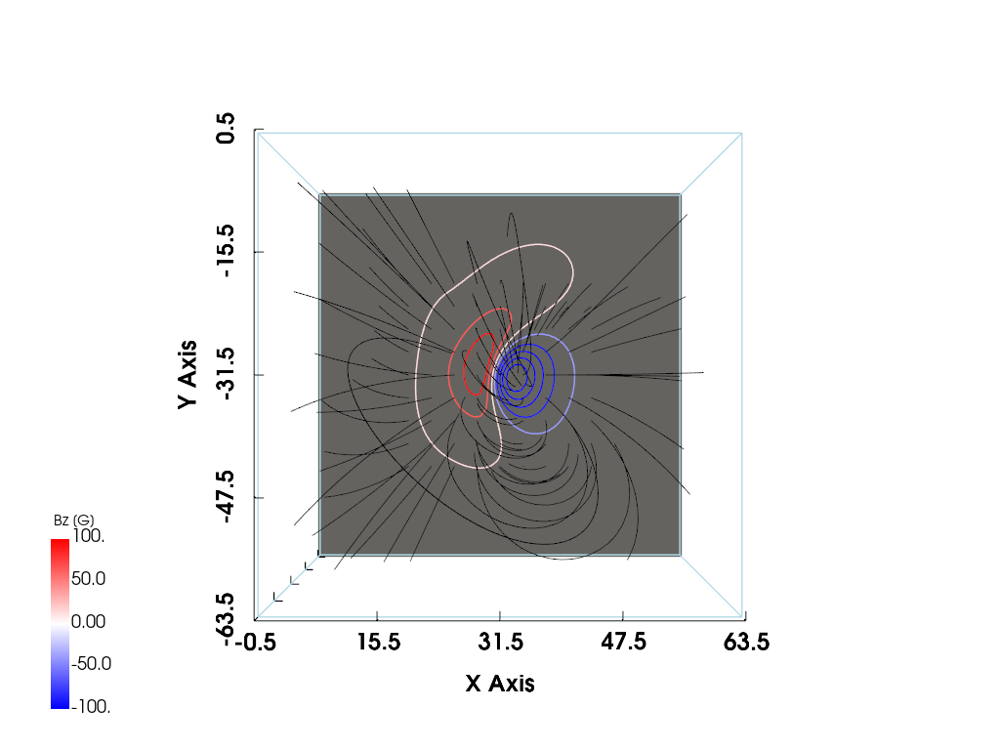

import numpy as np
from scipy.integrate import solve_bvp
import matplotlib.pyplot as plt Force free magnetic fields are defined as magnetic fields without Lorentz force
\begin{align*} \mathbf{J} \times \mathbf{B} & = \mathbf{0} \\ \nabla \cdot \mathbf{B} & = 0 \end{align*}
In magnetohydrodynamics (MHD), the current density \mathbf{J} is given by (in SI units)
\mathbf{J} = \frac{1}{\mu_0} \nabla \times \mathbf{B}
Therefore, force free magnetic fields are determined by the following partial differential equations (PDEs)
\begin{align*} \mathbf{(\nabla \times \mathbf{B})} \times \mathbf{B} & = \mathbf{0} \\ \nabla \cdot \mathbf{B} & = 0 \end{align*}
The analytical solution of these PDEs in a general case is unknown. But Low and Lou (1990) shows that we can calculate “axisymmetric” force free fields. If we rotate the plane perpendicular to the axis of symmetry, we can generate a quite general force free fields. In this post, I try to calculate this Low and Lou fields, referencing this code.
Low-Lou ODE
To calculate Low and Lou fields, we have to solve the following ordinary differential equation (ODE).
\begin{cases} \displaystyle (1-\mu^2)\frac{d^2 P}{d\mu^2} + n(n+1)P + a^2 \frac{1+n}{n}P^{1 + \frac{2}{n}} = 0 \\ \mu = \cos\theta \in [-1, 1] \\ P(-1) = 0 \\ P(1) = 0 \\ \\ P'(-1) = 10 \text{ for numerical normalization} \end{cases}
For fixed n, a serves as a eignvalue for this homogenous BVP.
For n=1, we can list the positive eigenvalues in ascending order with m=0, 1, 2, ....
We denote a eigenvalue as a^2 _{n, m} and the corresponding eigenfunction as P_{n, m}.
For n=1, m=0, 1, 2,
\begin{align} a^2 _{1, 0} &= 0 \\ a^2 _{1, 1} &= 0.425 \\ a^2 _{1, 2} &= 2.55 \\ \end{align}
If you carefully see the Figure 1 by Low and Lou (1990), we can notice that
P_{1,0} (\mu) \sim \cos\left(\displaystyle\frac{\pi}{2} \mu\right)
P_{1,1} (\mu) \sim -\sin\left(\displaystyle\pi \mu\right)
P_{1,2} (\mu) \sim -\cos\left(\displaystyle\frac{3\pi}{2} \mu\right)
Then we can generally say that
For m=0, 2 (even m)
P_{1,m} (\mu) \sim \cos\left(\displaystyle\frac{(m + 1)\pi}{2} \mu\right)
For m=1 (odd m) P_{1,m} (\mu) \sim \sin\left(\displaystyle\frac{(m + 1)\pi}{2} \mu\right)
This is the initial guess of the solution.
Rewrite Low-Lou ODE using \mathbf{S}(\mu)
(1-\mu^2)P'' + n(n+1)P + a^2 \frac{1+n}{n}P^{1 + \frac{2}{n}} = 0
\rightarrow P'' = \frac{1}{1-\mu^2}\left[- n(n+1)P - a^2 \frac{1+n}{n}P^{1 + \frac{2}{n}}\right]
\rightarrow P'' = \frac{-1}{1-\mu^2 + \epsilon}\left[n(n+1)P + a^2 \frac{1+n}{n}P^{1 + \frac{2}{n}}\right]
where \epsilon = 10^{-6} for numerical stability.
Target y
\mathbf{S}(\mu) = \begin{bmatrix}
P(\mu) \\
P'(\mu)
\end{bmatrix}
= \begin{bmatrix}
y[0] \\
y[1]
\end{bmatrix}
ODE system F(x, y)
\frac{d\mathbf{S}}{d\mu} = \mathbf{F}(\mu, \mathbf{S}(\mu))
= \begin{bmatrix}
P'(\mu) \\
P''(\mu)
\end{bmatrix}
= \begin{bmatrix}
y[1] \\
\displaystyle \frac{-1}{1-\mu^2 + \epsilon}\left[n(n+1)P + a^2 \frac{1+n}{n}P^{1 + \frac{2}{n}}\right]
\end{bmatrix}
\begin{cases} \mu = \cos\theta \in [-1, 1] \\ P(-1) = 0 \\ P(1) = 0 \\ \end{cases}
P'(-1) = 10
Domain
mu_span = [-1, 1]
N = 100 # number of points
mu = np.linspace(mu_span[0], mu_span[1], N)Boundary condition function bc defined from ya, yb
\text{ya} = \mathbf{S}(-1) = \begin{bmatrix} P(-1) \\ P'(-1) \end{bmatrix} = \begin{bmatrix} 0 \\ 10 \end{bmatrix} = \begin{bmatrix} \text{ya}[0] \\ \text{ya}[1] \end{bmatrix}
\text{yb} = \mathbf{S}(1) = \begin{bmatrix} P(1) \\ P'(1) \end{bmatrix} = \begin{bmatrix} 0 \\ ? \end{bmatrix} = \begin{bmatrix} \text{yb}[0] \\ \text{yb}[1] \end{bmatrix}
\text{bc} = \begin{bmatrix} \text{ya} - \mathbf{S}(-1) \\ \text{yb} - \mathbf{S}(1) \end{bmatrix} = \begin{bmatrix} \text{ya}[0] - 0 \\ \text{ya}[1] - 10 \\ \text{yb}[0] - 0 \end{bmatrix} = \begin{bmatrix} \text{ya}[0] \\ \text{ya}[1] - 10\\ \text{yb}[0] \end{bmatrix}
Initial guess y0
For the given spacing h,
\begin{align} \text{y0} & = [\mathbf{S}(-1), \mathbf{S}(-1 + h), \mathbf{S}(-1 + 2h), \cdots, \mathbf{S}(1)] \\ & = \begin{bmatrix} P(\mu=-1) & P(\mu=-1+h) & P(\mu=-1+2h) & \cdots & P(\mu=1) \\ P'(\mu=-1) & P'(\mu=-1+h) & P'(\mu=-1+2h) & \cdots & P'(\mu=1) \\ \end{bmatrix} \end{align}
For m=0, 2 (even m)
P_{1,m} (\mu) \sim \cos\left(\displaystyle\frac{(m + 1)\pi}{2} \mu\right)
For m=1 (odd m) P_{1,m} (\mu) \sim \sin\left(\displaystyle\frac{(m + 1)\pi}{2} \mu\right)
if m % 2 == 0:
P_init = np.cos(mu * (m + 1) * np.pi / 2)
else:
P_init = np.sin(mu * (m + 1) * np.pi / 2)Since P'(-1) = 10,
dP_init = 10*np.ones_like(mu)Then, together,
S_init = np.vstack([P_init, dP_init])def find_P_and_a2(n, m):
# ODE system
# Define BVP (Low and Lou 1990)
# a2 -> eigenvalue
# S = [P, dP/dmu]
# F = dSdmu
#
# dP/dmu = 10 at mu = -1
def F(x, y, p):
mu = x
P = y[0]
dP = y[1]
a2 = p[0]
ddP = (-1)*(n*(n+1)*P + a2*((1+n)/n)*P**(1+2/n)) / (1-mu**2 + 1e-6)
return [dP, ddP]
# Boundary Condition
def bc(ya, yb, p):
return [ya[0], ya[1]-10, yb[0]]
# Domain
mu_span = [-1, 1]
N = 100
mu = np.linspace(mu_span[0], mu_span[1], N)
# Initial guess
# For given m, use different initial guess
if m % 2 == 0:
P_guess = np.cos(mu * (m + 1) * np.pi / 2)
else:
P_guess = np.sin(mu * (m + 1) * np.pi / 2)
# For initial guess of dP/dmu, just use BC value
dP_guess = 10*np.ones_like(mu)
y_guess = np.vstack([P_guess, dP_guess])
# For each initial eigenvalue, solve the problem.
# If it is successful, return that otherwise do not return.
# np.vectorize -> for loop & return type : array
@np.vectorize
def solve_eigenvalue_problem(a2_0):
sol = solve_bvp(F, bc, mu, y_guess, p=[a2_0], tol=1e-6)
if sol.success == True:
return sol
else:
return None
a2_0_list = np.linspace(0.0, 10.0, 100)
results = solve_eigenvalue_problem(a2_0_list)
eigenvalues = np.array([sol.p for sol in results if sol is not None])
# round & unique value & sorting
eigenvalues = np.sort(np.unique(np.round(eigenvalues, 4)))
# The smallest value for given m is desired eigenvalue
eigenvalue = eigenvalues[0]
# If this eigenvalue is zero for nonzero m, choose the next big eigenvalue
if m > 0:
if not (eigenvalue > 0):
eigenvalue = eigenvalues[1]
# Solve again with that eigenvalue
sol = solve_eigenvalue_problem([eigenvalue])[0]
return sol.sol, sol.p[0]fig, ax = plt.subplots(figsize=(8, 6))
ax.grid(True)
ax.axhline(0, color='k', lw=2)
ax.axvline(0, color='k', lw=2)
ax.set_xlabel(r'$\mu$')
ax.set_ylabel(r'P($\mu$)')
mu_plot = np.linspace(-1, 1, 1000)
n = 1
for m in [0, 1, 2]:
S, a2 = find_P_and_a2(n, m)
P_plot = S(mu_plot)[0]
if a2 < 1e-3:
P_label = 'P' r'$_{' f'{n}, {m}' r'}(\mu)$ with $a^2' r'_{' f'{n}, {m}' r'}$ = 0'
else:
P_label = 'P' r'$_{' f'{n}, {m}' r'}(\mu)$ with $a^2' r'_{' f'{n}, {m}' r'}$ = ' f'{a2:.3g}'
ax.plot(mu_plot, P_plot, label=P_label)
fig.legend()We successfuly solve Low-Lou ODE for n=1, m=0, 1, 2. (see Figure 1 by Low and Lou (1990))
Parameters
bounds
bounds=[x_min, x_max, y_min, y_max, z_min, z_max]
resolutions
resolutions=[Nx, Ny, Nz] where Nx, Ny, Nz respectively mean that the number of points in x-, y-, z-axis.
n & m
P_{n,m}(\mu) & a^2 _{n,m} are eigenfunction and eigenvalues for Low-Lou ODE with fixed n. And m is just used for denoting differenct eigenfunction and eigenvalues.
\displaystyle (1-\mu^2)\frac{d^2 P_{n,m}}{d\mu^2} + n(n+1)P_{n,m} + a^2 _{n,m} \frac{1+n}{n}P_{n,m}^{1 + \frac{2}{n}} = 0
l & \Phi
See Figure 2 by Low and Lou (1990)
Algorithm
For each physical coordinate (x, y, z),
Calculate corresponding
- local Cartesian coordinate (X, Y, Z)
- local spherical coordinate (r, \theta, \phi)
- \mu = \cos\theta
- P'_{n,m}(\mu) and P_{n,m}(\mu) by solving Low-Lou ODE
- (B_r, B_\theta, B_\phi)
- (B_X, B_Y, B_Z)
- (B_x, B_y, B_z)
Then, we get a vector (B_x, B_y, B_z) at the point (x, y, z)
The local spherical coordinates are
r = \sqrt{X^2 + Y^2 + Z^2}
\theta= \arccos\frac{Z}{r}
\phi = \arctan2\frac{Y}{X}
S refers to \mathbf{S}_{n,m}(\mu) and a2 refers to a^2 _{n,m}
\mathbf{S}_{n,m}(\mu) = \begin{bmatrix} P_{n,m}(\mu) \\ P'_{n,m}(\mu) \end{bmatrix}
The magnetic field is
\mathbf{B}(r, \theta, \phi) = B_r \hat{r} + B_\theta \hat{\theta} + B_\phi \hat{\phi}
where
B_r = \frac{1}{r^2 \sin\theta} \frac{\partial A}{\partial \theta}
B_\theta = -\frac{1}{r \sin\theta} \frac{\partial A}{\partial r}
B_\phi = \frac{Q}{r \sin\theta}
Here A is
A = (r^{-n})P_{n,m}(\mu)
\frac{\partial A}{\partial \theta} = (- r^{-n}\sin\theta) P'_{n,m}(\mu)
\frac{\partial A}{\partial r} = (-n r^{-n-1}) P_{n,m}(\mu)
For n=1,
Q(A) = \sqrt{a^2 _{n,m}} A^{1 + \frac{1}{n}}
\alpha = \sqrt{a^2 _{n,m}} \left(1 + \frac{1}{n} \right) A^{\frac{1}{n}}
import pyvista as pv
pv.set_jupyter_backend('static')
pv.global_theme.notebook = True
pv.start_xvfb()class LowLouMag:
"A Low and Lou (1990) NLFFF"
def __init__(self,
bounds=[-1,1,-1,1,0,2],
resolutions=[64,64,64],
n=1, m=1,
l=0.3, Phi=np.pi/2):
self.bounds = bounds
self.resolutions = resolutions
self.n = n
self.m = m
self.l = l
self.Phi = Phi
def __str__(self):
return (
"### Low and Lou (1990) NLFFF\n"
f"bounds = {self.bounds}<br>\n"
f"resolutions = {self.resolutions}<br>\n"
f"n = {self.n}<br>\n"
f"m = {self.m}<br>\n"
f"l = {self.l}<br>\n"
f"Phi = {self.Phi/np.pi}π<br>\n"
)
_repr_markdown_ = __str__
def create_physical_coordinates(self):
x_1D = np.linspace(self.bounds[0], self.bounds[1], self.resolutions[0])
y_1D = np.linspace(self.bounds[2], self.bounds[3], self.resolutions[1])
z_1D = np.linspace(self.bounds[4], self.bounds[5], self.resolutions[2])
x_spacing = np.diff(x_1D)[0]
y_spacing = np.diff(y_1D)[0]
z_spacing = np.diff(z_1D)[0]
spacing = (x_spacing, y_spacing, z_spacing)
origin = (x_1D[0], y_1D[0], z_1D[0]) # The bottom left corner of the data set
self.grid = pv.ImageData(dimensions=self.resolutions, spacing=spacing, origin=origin)
self.x_1D = x_1D
self.y_1D = y_1D
self.z_1D = z_1D
return self.grid
def calculate_local_Cartesian_coordinates(self):
# information of point source & Z-axis
l = self.l
Phi = self.Phi
# physical coordinates (x, y, z)
x = self.grid.x
y = self.grid.y
z = self.grid.z
# local Cartesian coordinates (X, Y, Z)
X = x*np.cos(Phi) - (z+l)*np.sin(Phi)
Y = y
Z = x*np.sin(Phi) + (z+l)*np.cos(Phi)
self.X, self.Y, self.Z = X, Y, Z
def calculate_local_spherical_coordinates(self):
# local Cartesian coordinates (X, Y, Z)
X = self.X
Y = self.Y
Z = self.Z
# local spherical coordinates (r, theta, phi)
r = np.sqrt(X**2 + Y**2 + Z**2)
theta = np.arccos(Z/r)
phi = np.arctan2(Y, X)
self.r, self.theta, self.phi = r, theta, phi
def calculate_eigenfunctions(self):
# calculate mu=cos(theta)
mu = np.cos(self.theta)
# eigenfunction parameter n, m
n = self.n
m = self.m
# calculate eigenfunction & its derivates and eigenvalues
# S = [P, dP]
S, a2 = find_P_and_a2(n, m)
P, dP = S(mu)
self.P, self.dP, self.a2 = P, dP, a2
def calculate_local_spherical_magnetic_fields(self):
# eigenfunctions and eigenvalue
n, m = self.n, self.m
P, dP, a2 = self.P, self.dP, self.a2
# r, theta info
r, theta = self.r, self.theta
A = (r**(-n)) * P
dA_dtheta = -(r**(-n)) * np.sin(theta) * dP
dA_dr = -(n*(r**(-n-1))) * P
Q = np.sqrt(a2) * A * np.abs(A)**(1/n)
alpha = np.sqrt(a2) * (1 + 1/n) * A**(1/n)
Br = (r**2 * np.sin(theta))**(-1) * dA_dtheta
Btheta = -1 * (r*np.sin(theta))**(-1) * dA_dr
Bphi = (r*np.sin(theta))**(-1) * Q
self.Br, self.Btheta, self.Bphi, self.alpha = Br, Btheta, Bphi, alpha
def calculate_local_Cartesian_magnetic_fields(self):
Br, Btheta, Bphi = self.Br, self.Btheta, self.Bphi
r, theta, phi = self.r, self.theta, self.phi
BX = Br * np.sin(theta) * np.cos(phi) + Btheta * np.cos(theta) * np.cos(phi) - Bphi * np.sin(phi)
BY = Br * np.sin(theta) * np.sin(phi) + Btheta * np.cos(theta) * np.sin(phi) + Bphi * np.cos(phi)
BZ = Br * np.cos(theta) - Bphi * np.sin(theta)
self.BX, self.BY, self.BZ = BX, BY, BZ
def calculate_physical_magnetic_fields(self):
BX, BY, BZ = self.BX, self.BY, self.BZ
Phi = self.Phi
Bx = BX * np.cos(Phi) + BZ * np.sin(Phi)
By = BY
Bz = - BX * np.sin(Phi) + BZ * np.cos(Phi)
self.Bx, self.By, self.Bz = Bx, By, Bz
def calculate_final_magnetic_fields(self):
bx = self.Bx.reshape(self.resolutions).transpose(2, 1, 0)
by = self.By.reshape(self.resolutions).transpose(2, 1, 0)
bz = self.Bz.reshape(self.resolutions).transpose(2, 1, 0)
return bx, by, bz
##------ All in one ------##
def calculate(self):
self.create_physical_coordinates()
self.calculate_local_Cartesian_coordinates()
self.calculate_local_spherical_coordinates()
self.calculate_eigenfunctions()
self.calculate_local_spherical_magnetic_fields()
self.calculate_local_Cartesian_magnetic_fields()
self.calculate_physical_magnetic_fields()
bx, by, bz = self.calculate_final_magnetic_fields()
return bx, by, bzb = LowLouMag()
bLow and Lou (1990) NLFFF
bounds = [-1, 1, -1, 1, 0, 2]
resolutions = [64, 64, 64]
n = 1
m = 1
l = 0.3
Phi = 0.5π
b.create_physical_coordinates()| ImageData | Information |
| N Cells | 250047 |
| N Points | 262144 |
| X Bounds | -1.000e+00, 1.000e+00 |
| Y Bounds | -1.000e+00, 1.000e+00 |
| Z Bounds | 0.000e+00, 2.000e+00 |
| Dimensions | 64, 64, 64 |
| Spacing | 3.175e-02, 3.175e-02, 3.175e-02 |
| N Arrays | 0 |
b.calculate_local_Cartesian_coordinates()b.grid.x[0], b.grid.y[0], b.grid.z[0](-1.0, -1.0, 0.0)b.X[0], b.Y[0], b.Z[0](-0.30000000000000004, -1.0, -1.0)b.calculate_local_spherical_coordinates()b.r[0], b.theta[0], b.phi[0](1.445683229480096, 2.3346567297775978, -1.8622531212727638)b.calculate_eigenfunctions()b.P[0], b.dP[0], b.a2(2.3671821639686197, 4.145376627987454, 0.4274037235234833)b.calculate_local_spherical_magnetic_fields()b.Br[0], b.Btheta[0], b.Bphi[0], b.alpha[0](-1.3719698429432043,
1.0848561237109233,
1.6788928338597737,
2.140955710310132)b.calculate_local_Cartesian_magnetic_fields()b.BX[0], b.BY[0], b.BZ[0](2.108420021547058, 1.185348144787035, -0.26343650351723624)b.calculate_physical_magnetic_fields()b.Bx[0], b.By[0], b.Bz[0](-0.26343650351723613, 1.185348144787035, -2.108420021547058)bx, by, bz = b.calculate_final_magnetic_fields()!pip install -q git+https://github.com/mgjeon/magnetic_field_line.gitfrom magplot.base import create_mesh, mag_plottermesh = create_mesh(bx, by, bz)b_plot = mag_plotter(mesh)
b_tube, b_bottom, b_dargs = b_plot.create_mesh(i_siz=32, j_siz=32,
i_resolution=8, j_resolution=8,
vmin=-100, vmax=100,
max_time=10000)p = pv.Plotter()
p.add_mesh(b_plot.grid.outline())
p.add_mesh(b_bottom, cmap='gray', **b_dargs)
p.add_mesh(b_tube, lighting=False, color='blue')
p.camera_position = 'xy'
p.show_bounds()
p.show()p = pv.Plotter(off_screen=False)
p.add_mesh(b_plot.grid.outline())
p.add_mesh(pv.Plane(center=(mesh.center[0], mesh.center[1], -1), direction=(0, 0, 1), i_size=64, j_size=64), color='gray')
p.add_mesh(b_bottom.contour(scalars=b_bottom['vector'][:, 2]), cmap='bwr', **b_dargs)
p.add_mesh(b_tube, lighting=False, color='black')
p.camera_position = 'xy'
p.show_bounds()
p.show()It seems to correspond to Figure 8, not Figure 3. I don’t know why.
mesh_new = create_mesh(*LowLouMag(Phi=np.pi/4).calculate()).reflect((0, 1, 0))
b_plot_new = mag_plotter(mesh_new)
b_tube_new, b_bottom_new, b_dargs_new = b_plot_new.create_mesh(i_siz=32, j_siz=32,
i_resolution=8, j_resolution=8,
vmin=-100, vmax=100,
max_time=10000)
p = pv.Plotter(off_screen=False)
p.add_mesh(b_plot_new.grid.outline())
p.add_mesh(pv.Plane(center=(mesh_new.center[0], mesh_new.center[1], -1), direction=(0, 0, 1), i_size=64, j_size=64), color='gray')
p.add_mesh(b_bottom_new.contour(scalars=b_bottom_new['vector'][:, 2]), cmap='bwr', **b_dargs_new)
p.add_mesh(b_tube_new, lighting=False, color='black')
p.camera_position = 'xy'
p.show_bounds()
p.show()
mesh_new = create_mesh(*LowLouMag(Phi=0.47).calculate()).reflect((0, 1, 0))
b_plot_new = mag_plotter(mesh_new)
b_tube_new, b_bottom_new, b_dargs_new = b_plot_new.create_mesh(i_siz=40, j_siz=40,
i_resolution=8, j_resolution=8,
vmin=-100, vmax=100,
max_time=10000)
p = pv.Plotter(off_screen=False)
p.add_mesh(b_plot_new.grid.outline())
p.add_mesh(pv.Plane(center=(mesh_new.center[0], mesh_new.center[1], -1), direction=(0, 0, 1), i_size=64, j_size=64), color='gray')
p.add_mesh(b_bottom_new.contour(scalars=b_bottom_new['vector'][:, 2]), cmap='bwr', **b_dargs_new)
p.add_mesh(b_tube_new, lighting=False, color='black')
p.camera_position = 'xy'
p.show_bounds()
p.show()mesh_new = create_mesh(*LowLouMag(Phi=0.27).calculate()).reflect((0, 1, 0))
b_plot_new = mag_plotter(mesh_new)
b_tube_new, b_bottom_new, b_dargs_new = b_plot_new.create_mesh(i_siz=40, j_siz=40,
i_resolution=8, j_resolution=8,
vmin=-100, vmax=100,
max_time=10000)
p = pv.Plotter(off_screen=False)
p.add_mesh(b_plot_new.grid.outline())
p.add_mesh(pv.Plane(center=(mesh_new.center[0], mesh_new.center[1], -1), direction=(0, 0, 1), i_size=64, j_size=64), color='gray')
p.add_mesh(b_bottom_new.contour(scalars=b_bottom_new['vector'][:, 2]), cmap='bwr', **b_dargs_new)
p.add_mesh(b_tube_new, lighting=False, color='black')
p.camera_position = 'xy'
p.show_bounds()
p.show()With reflect((0, 1, 0)), these seems to correspond to Figure 4, 5, and 6, respectively. However, I don’t know why I need to use reflect((0, 1, 0)).
References
Low, BC, and YQ Lou. 1990. “Modeling Solar Force-Free Magnetic Fields.” Astrophysical Journal, Part 1 (ISSN 0004-637X), Vol. 352, March 20, 1990, p. 343-352. 352: 343–52.